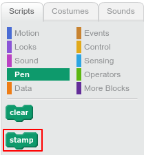
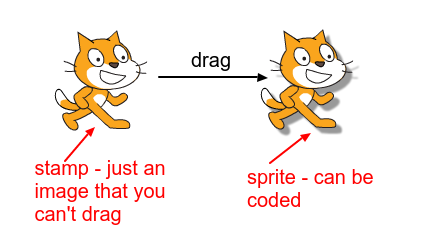
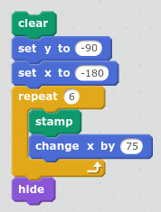
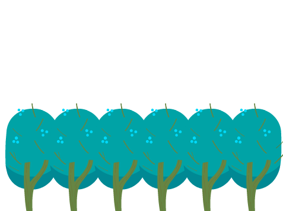

You can use stamp{:class="blockpen"} to draw a copy of a Scratch sprite's costume on the stage.
stamp{:class="blockpen"} in the palette to create a copy of your sprite's costume.

Here's a code example that creates a row of stamps and then hides the actual sprite:

You could use it to create a repeating background like this forest of trees:

You can't move or change the stamps with code, but you can use clear{:class="blockpen"} to remove them.